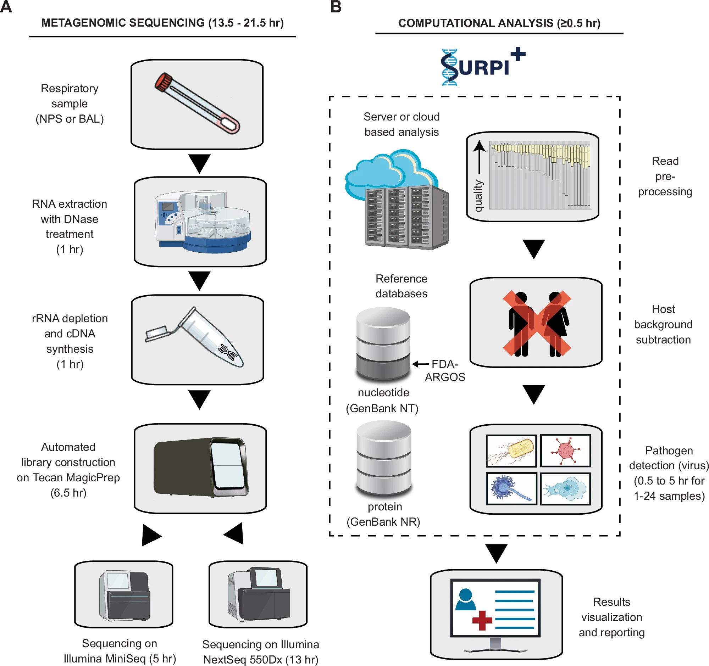
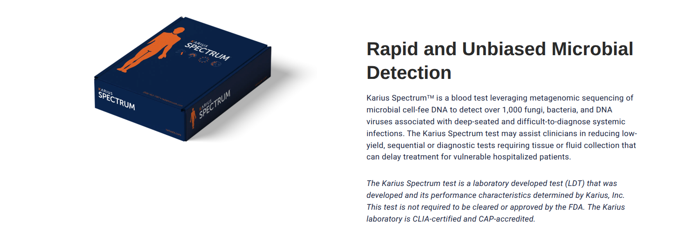
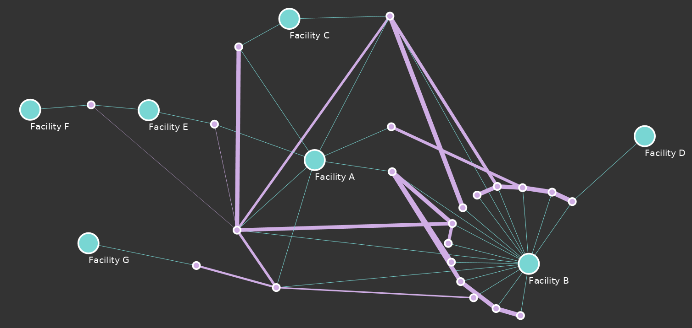

Applications and advancement of NGS Data
Kelsey Florek, PhD, MPH
Senior Genomics and Data Scientist
Wisconsin State Laboratory of Hygiene
March 24, 2025
How does a Diagnostic Test compare to a Surveillance Test in Public Health?
What is the primary goal
of an
NGS Diagnostic Test?
What is the primary goal
of an
NGS Surveillance Test?
How do they overlap?
NGS Diagnostic Testing
Streptococcus pneumoniae serotyping
Real-time PCR Approach:
- 48 real-time PCR assays in 12 quadriplex reactions
- allows for detection of 64 serotypes as individual serotypes or small serogroups
WGS Approach:
- allows for detection of 631 serotypes and genetic variants
- full genomic resolution allows the additional detection of AMR and virulence factor genes
Metagenomic LDT for respiratory virus detection and discovery
Commercial Clinical Tests
NGS Surveillance Testing
Using Genomic Data to inform Surveillance

National Influenza Surveillance Reference Centers
APHL and CDC developed the Influenza Virologic Surveillance Right Size Roadmap to systematically define the rationale, vital capabilities, and optimal "right size" for influenza virologic surveillance. The Roadmap can help states determine the optimal amount of laboratory testing to meet national surveillance goals with confidence that the data provides an accurate picture of what is really happening within the US.
Using Genomic Data to inform Outbreaks

Carbapenem-Resistant Acinetobacter baumannii Outbreak
- Amikacin: Resistant
- Aztreonam: Resistant
- Cefepime: Resistant
- Cefotaxime: Resistant
- Ceftazidime: Resistant
- Ciprofloxacin: Resistant
- Colistin: Susceptible
- Doripenem: Resistant
- Doxycycline: Resistant
- Gentamicin: Resistant
- Imipenem: Resistant
- Levofloxacin: Resistant
- Meropenem: Resistant
- Minocycline: Intermediate
- Piperacillin-tazobactam: Resistant
- Polymyxin-B: Susceptible
- Ticarcillin-clavulanate: Resistant
- Tobramycin: Resistant
- Trimethoprim-sulfamethoxazole: Resistant
Carbapenem-Resistant Acinetobacter baumannii Outbreak
Considerations for Genomic Surveillance
Value of NGS Data increases with timeliness of data and density of samples
The utility of pathogen sequencing data is also a function of sequencing density (i.e., the proportion of cases of a disease from which genomes of relevant pathogens are sequenced and shared) and the timeliness of data sharing.
NGS data in key aspects of genomic epidemiology
- Identifying Outbreaks
- Determine the origin of an outbreak
- Calculate epidemic parameters
- Track and reconstruct transmission routes
- Identify genes and genotypes associated with pathogen phenotypes of interest
- Is there an outbreak?
- Where, when and how did a pathogen enter the population of interest?
- How quickly is the number of infections from the pathogen growing (that is, what are the epidemic dynamics)?
- How is the pathogen spreading through the population?
- What genes or genotypes are associated with the pathogen’s virulence or other phenotypes of interest?
Enhanced Detection System for Healthcare-Associated Transmission (EDS-HAT)
Combination of WGS surveillance and ML of electronic health records to identify outbreaks and transmission routes.
"EDS-HAT could have prevented 25 (lower bound) to 63 (upper bound) transmissions. Moreover, 3.1–8.0 fewer 30-day attributable readmissions and 1.6–3.3 fewer deaths would have occurred had EDS-HAT been running in real time."